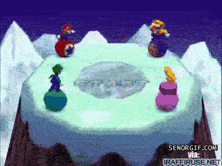

¿What do I like to do?
- Watch Anime and Series (Anime and Drama)
- Play Videogames
- Learn
- Travel
Normally I usually consume anime of all kinds of genres, Currently I really like Kimetsu no Yaiba.

I have always been a person who has loved Video Games, since he was little he played titles like Mario Kart 64, Mario Party, smash bros etc
I love learning new programming techniques, technologies that are used today, everything that can help me to grow as a developer in the world of work.
One of my dreams that I plan to fulfill is to be able to travel and able to try all kinds of food.